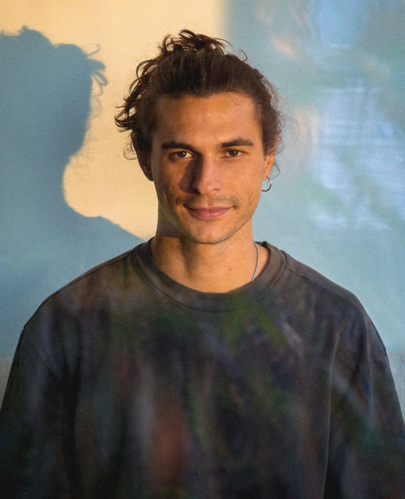
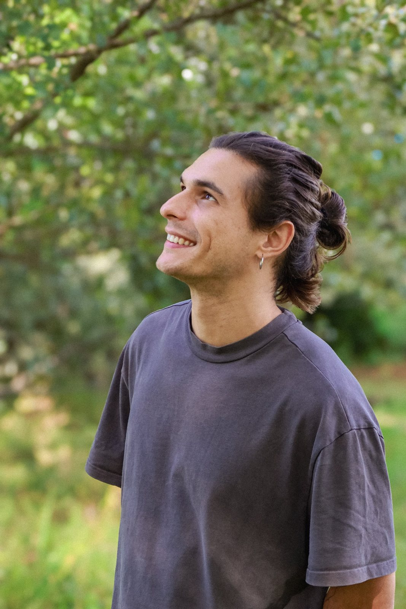

Hi, I'm Slade.
Artist, musician and sound practitioner. Swimming in sound since forever. 𓆝
Where I come from
I grew up in Johannesburg, a gritty, colourful, wildly creative city where music was everywhere, all the time, spilling out of cars, shops, street corners and every gathering I can remember. Joburg taught me that sound is how people find each other, and I've been following that feeling ever since.
From there life took me to Barcelona, which blew my horizons wide open and put me in a room with every kind of human imaginable. Then came Brazil, another land where music is the native language, then Germany, and eventually Switzerland. Here I fell in love with the mountains and with a kind of quiet I never knew I needed, which says a lot about where I am in life right now: seeking peace, groundedness and a deeper connection with myself and the people around me.
Many hats
I've worn many hats in my career. I've been a club dj, made and released my own music, and played gigs from Berlin to Barcelona to Ghent. I co-founded Show and Tell Records in Berlin, and later opened Alquímica Records, a record store and café in the heart of Zurich. I organised my own festival in the mountains, Türa Festival, which is still one of the things I'm proudest of. I've taught English to children and teenagers, and done a stint in the corporate world.
The leap
For a while I played it safe. I had a steady job and a version of myself that looked fine from the outside, but I was showing up with a mask on, and wearing it every day was painful. Eventually I realised I couldn't keep living out of line with who I am. So I took the leap: I chose to follow my passions, to trust God, and to believe that a life built around creating could let me not just survive but truly thrive. Everything I offer now grows out of that choice.

What I love
Nature, first and foremost. I'm obsessed with trees, I'll walk barefoot on grass at any opportunity, and I'm happiest anywhere near water. I love reading, and I love being inspired by people, by long conversations and by art in every form. All of it finds its way into the paintings, the music and the sound baths.
Who I am
My friends and family say I'm someone who listens, who creates space, and who brings a calm, light and kinda playful energy into a room. I'd like to think that's what you'll feel in my work too: something grounded, a little magical and never too serious.
My partner in crime
None of this would be possible without Laura, my love and partner in crime. She's my biggest support and my biggest inspiration, we do so many things together, and I love her more than words can hold.
that's the story so far. the rest is still being painted. 𓆝